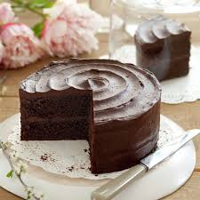

POSTRES

El pastel de chocolate más rico y fácil de hacer.
Ingredientes: Para 8 personas; 1. Chocolate negro de cobertura 410 g 2. Leche entera 140 ml 3.Zumo de limón 15 ml 4.Harina de trigo 150 g 5. Cacao en polvo 60 g 6. Levadura química 5 g 7. Sal pellizco 8. Mantequilla (a temperatura ambiente) 200 g 9. Azúcar moreno 90 g 10. Azúcar blanquilla 110 g 11. Huevos tamaño "M" (a temperatura ambiente) 3 12. Esencia de vainilla 5 g 13. Agua hirviendo 125 ml 14.Nata líquida 400 ml Cómo hacer pastel de chocolate; Dificultad: Media Tiempo total 1 h Elaboración 30 m Cocción 30 m Reposo 3 h Comenzamos separando 350 gramos de chocolate negro de cobertura y 50 gramos de mantequilla para la elaboración de una ganache de chocolate con la que rellenar y cubrir el pastel. Reservamos ambos ingredientes y procedemos con la elaboración de la masa para el pastel. En primer lugar, fundimos el resto del chocolate de cobertura (60 gramos) y lo dejamos atemperar. Para ello lo troceamos y lo calentamos en el microondas. Usamos golpes de calor cortos, de 30 segundos, para evitar que se queme y removemos entre golpe de calor y golpe de calor. Repetimos la operación tantas veces como sea necesario hasta que el chocolate se haya fundido. Reservamos hasta que se atempere. Por otro lado, mezclamos la leche con el zumo de limón, removemos y lo dejamos reposar, al menos, 15 minutos. La leche se cortará por efecto del ácido del limón y su textura se asemejará a la del yogur, pero esto es precisamente lo que buscamos, de modo que lo utilizaremos para la elaboración de nuestro bizcocho sin preocupación alguna. Mientras el chocolate se atempera y la leche reposa, preparamos tres moldes de 20 cm de diámetro en los que vamos a cocer el bizcocho. Engrasamos cada uno con un poco de mantequilla, cortamos círculos de papel sulfurizado del tamaño de sus bases y las cubrimos con ellos. Colocamos los moldes sobre una bandeja de horno. Reservamos. Encendemos el horno a 180ºC, arriba y abajo, y comenzamos la preparación de la mezcla. En un cuenco amplio tamizamos la harina, el cacao, el impulsor químico y la sal y reservamos. Con una batidora de varillas o un robot de cocina, batimos los 150 gramos restantes de mantequilla junto con los dos tipos de azúcar hasta que la mezcla esté cremosa. A continuación, añadimos los huevos, de uno en uno, no echando el siguiente hasta que el anterior esté perfectamente integrado en la crema de mantequilla. Agregamos la vainilla y removemos hasta incorporar. No hay que preocuparse si la mezcla parece cortada, es perfectamente normal. En este punto, incorporamos el chocolate derretido y atemperado. A velocidad suave, lo batimos con las varillas hasta que esté totalmente incorporado. Entonces añadimos los ingredientes secos (es decir, la mezcla de la harina) alternándolos con la leche. Añadimos los ingredientes secos tres veces y la leche en dos, empezando y terminando con los secos, hasta obtener una masa espesa. Para finalizar, agregamos el agua hirviendo y removemos hasta incorporar. Vertemos la mezcla en los tres moldes, en cantidades iguales, y los introducimos en el horno, a media altura. Cocemos durante, aproximadamente, 20 minutos o hasta que veamos que está cocidos. Retiramos del horno y dejamos atemperar sobre una rejilla metálica. Cuando hayan perdido algo de temperatura, introducimos los moldes en una bolsa de plástico y la anudamos. Dejamos que los bizcochos terminen de enfriarse por completo en su interior. Con esta técnica conseguimos que los bizcochos queden muy jugosos y húmedos. Podemos usar los bizcochos una vez fríos o dejar que se asienten hasta el día siguiente, en cuyo caso los conservaremos en la nevera. Para preparar la ganache de chocolate negro con la que rellenar y cubrir el pastel, comenzamos por calentar la nata en un cacito. Cuando alcance el punto de ebullición, la retiramos del fuego y añadimos el chocolate troceado. Tapamos y esperamos cinco minutos hasta que el chocolate se funda con el calor residual. Transcurrido este tiempo, añadimos la mantequilla y removemos con unas varillas hasta obtener una mezcla homogénea. Introducimos la mezcla en una manga pastelera y dejamos enfriar antes de utilizar. Necesitamos que la ganache pierda calor, de lo contrario se desparramará por el interior y exterior del pastel y no conseguiremos rellenarlo ni cubrirlo en condiciones. La temperatura ideal es la ambiente. Para montar el pastel, extendemos la ganache de chocolate negro sobre uno de los bizcochos, colocamos otro encima, Cubrimos de nuevo con más ganache, por toda la superficie, y terminamos colocando el tercer bizcocho encima. Con ayuda de una espátula humedecida en agua, extendemos el resto de la ganache por la superficie y los laterales, asegurándonos de no dejar huecos. Con qué acompañar el pastel de chocolate Este pastel de chocolate es contundente, por lo que recomiendo ser comedido con las porciones. También podemos reducir el número de capas, en cuyo caso deberemos de ajustar las cantidades de los ingredientes a utilizar. Es perfecto para media tarde y con un vaso de leche bien fresquito. Podemos acompañarlo de helado cremoso de vainilla o crème fraîche, quedará delicioso.